China Employee Termination 2026: Pulse Operator-Handbook Brief for Foreign Employers
Key takeaways
- Foreign employers reduce China termination risk when every case follows a compact operator handbook instead of ad hoc judgment.
- The handbook should prioritize four control domains: route legality, evidence integrity, payroll/tax closure, and communication discipline.
- A handbook format works well across time zones because it clarifies role ownership and response sequence.
- City-level interpretation should be embedded as an operating step, not external commentary.
- This brief is practical-first; legal depth appears in a secondary appendix.
What changed and why this matters now
Many multinational teams already have policies, but day-to-day outcomes still vary by operator. One team executes a clean case; another team with the same policy triggers avoidable disputes. The difference is operational precision. A short operator handbook creates repeatable behavior: what to check, what to escalate, what blocks progression, and what evidence must exist before the next move.
This run rotates to an operator-handbook format (different from readiness ladder, mistake-reversal, pathfinder, thermostat, and escalation structures) to make practical execution more consistent for foreign-led teams.
Plain-language legal context first
China employer-side termination generally requires a lawful statutory basis, fact-pattern fit, and coherent process execution. Public legal anchors include the PRC Labor Contract Law framework, implementing regulation references (including Decree No. 535 context), and Supreme People’s Court labor-dispute interpretation materials. For non-local decision-makers, the practical implication is simple: legal entitlement and process quality must move together.
An operator handbook converts this principle into executable steps with clear handoffs.
Pulse operator handbook (impact-first)
Module 1 — Intake and Route Setup
Objective: lock route assumptions before broader case movement.
Operator actions:
- Open case ID and entity/city tags.
- Draft route rationale and fallback route.
- Confirm route owner and escalation path.
Stop condition: route rationale unclear or unsupported by facts.
Module 2 — Local Calibration
Objective: verify route practicality against city-level interpretation.
Operator actions:
- Obtain local interpretation memo.
- Record unresolved local questions and owner deadlines.
- Flag route impact if local position shifts.
Stop condition: unresolved local conflict on route viability.
Module 3 — Evidence Construction
Objective: build defensible chronology and remove contradictions.
Operator actions:
- Create chronology ledger with source ownership.
- Reconcile manager, HR, and legal narratives.
- Log contradiction closures with timestamps.
Stop condition: material evidence inconsistency remains open.
Module 4 — Payroll/Tax Closure
Objective: finalize financial and tax/social treatment before communication.
Operator actions:
- Confirm final pay and severance calculations.
- Validate IIT/social handling and payment timing.
- Prepare payment-proof workflow.
Stop condition: unresolved payout or tax/social mapping.
Module 5 — Communication Control
Objective: deliver aligned, disciplined employee communication.
Operator actions:
- Approve script modules and spokesperson.
- Complete briefing log and fallback comms plan.
- Set incident escalation trigger for script deviations.
Stop condition: unbriefed speaker or script drift risk.
Module 6 — Closure and Retrieval
Objective: ensure case is challenge-ready after execution.
Operator actions:
- Complete closure memo.
- Index all evidence by case ID.
- Run retrieval test for key artifacts.
Stop condition: retrieval test fails or index incomplete.
Why this helps foreign employers
A handbook lets headquarters and local teams share one operational language. It reduces variance between operators, speeds onboarding, and makes go/hold decisions auditable. It also prevents “silent assumptions” that often appear in cross-border execution.
Practical scenarios
Scenario 1: Strong legal memo, weak operator handoff
Route logic is solid, but evidence and payroll teams interpret next steps differently.
Handbook response: enforce module handoffs and stop conditions to prevent drift.
Scenario 2: Communication pressure before payroll closure
Business leaders request immediate communication for speed.
Handbook response: Module 4 stop condition blocks Module 5 launch.
Scenario 3: Local interpretation changes mid-case
City-level guidance shifts route confidence.
Handbook response: return to Module 2 and re-validate route setup before further actions.
Role-owned SOP (handbook deployment)
Step 1 — Assign module owners
Owners: HRBP + Legal + Payroll lead
- Define primary/backup owner for each module.
Step 2 — Enforce sequential module completion
Owners: module leads + cross-functional panel
- Complete module evidence before handoff.
- Trigger stop conditions automatically.
Step 3 — Issue go/hold checkpoint notes
Owners: HR + Legal + Payroll
- Document status after Modules 3, 4, and 5.
Step 4 — Execute closure QA
Owners: Compliance + records owner
- Validate Module 6 retrieval quality.
Step 5 — Continuous improvement
Owners: operations governance lead
- Track module-level failure frequency.
- Update handbook guidance monthly.
Required document checklist
- Employee profile and contract context
- Route rationale memo + fallback route
- City-level interpretation memo
- Chronology/source ledger
- Script package and briefing records
- Payroll/severance/IIT/social worksheet
- Settlement/acknowledgment records
- Payment proof artifacts
- Module checkpoint logs
- Closure memo + archive index
Exception handling playbook
- Skipped module discovered: rollback to missed module and re-run controls.
- Owner unavailable: activate backup owner with SLA preservation.
- Conflicting module outputs: escalate with evidence-based reconciliation note.
- Deadline override attempt: require formal risk acceptance and unresolved-module disclosure.
- Repeated stop conditions in same module: launch targeted retraining/workflow redesign.
System implementation notes
- Add module-state workflow fields (not started/in progress/blocked/complete).
- Require evidence attachments for module completion.
- Auto-block downstream modules on stop conditions.
- Track metrics: module completion time, block frequency, rollback count, dispute outcomes.
- Use monthly analytics to tune handbook and staffing.
Common mistakes and prevention
- Mistake: policy-rich, operations-light execution.
Prevention: mandatory operator handbook with module ownership.
- Mistake: local calibration treated as optional.
Prevention: hard stop in Module 2.
- Mistake: payroll closure after communication prep.
Prevention: Module 4 gate before Module 5.
- Mistake: weak closeout discipline.
Prevention: Module 6 retrieval test requirement.
- Mistake: no module-level learning loop.
Prevention: periodic failure analysis and updates.
What to do now
- Deploy a six-module operator handbook for active China termination cases.
- Assign named primary/backup owners per module.
- Configure stop conditions as workflow locks.
- Require checkpoint notes at key module transitions.
- Track blocked modules and root causes weekly.
- Train managers on Module 5 communication controls.
- Update handbook monthly using outcome data.
What to watch next
- City-level interpretation shifts may create more Module 2 blocks.
- High case volumes can bottleneck Module 4 payroll closure.
- Practitioner updates may change Module 3 evidence expectations.
FAQ
1) Why use an operator handbook instead of a general policy?
A handbook translates policy into executable steps with ownership and stop rules.
2) Can modules run out of order to save time?
Not for critical controls; sequence protects defensibility.
3) Who can release a blocked module?
The designated module owner plus cross-functional approval for critical blocks.
4) Is local interpretation always required?
Yes, because city-level practice can materially affect route confidence.
5) What blocks communication most often?
Unresolved payroll/tax closure and evidence contradictions.
6) How do we prevent operator variance?
Standardize module evidence, handoffs, and checkpoint memos.
7) How does this improve over time?
Measure module failures and continuously refine handbook controls.
Legal depth appendix (secondary)
This brief uses official/legal and practitioner materials relevant to employer-side termination operations in China. Core anchors include the PRC Labor Contract Law framework, implementing regulation references associated with Decree No. 535 context, and Supreme People’s Court labor-dispute interpretation materials. Practitioner and payroll-context sources provide practical interpretation for foreign employers. Residual uncertainty remains city- and fact-specific and should be validated with localized professional input for live matters.
Disclaimer
This content is informational only and does not constitute legal, tax, or employment advice.
Sources
- National People’s Congress (Labor Contract Law, English text), accessed 2026-03-05: http://www.npc.gov.cn/zgrdw/englishnpc/Law/2007-12/13/content_1384064.htm
- State Council Gazette reference (implementing regulation / Decree No. 535 context), accessed 2026-03-05: https://www.gov.cn/gongbao/content/2008/content_1124615.htm
- Supreme People’s Court labor dispute interpretation update page, accessed 2026-03-05: https://www.court.gov.cn/fabu/xiangqing/243981.html
- China Briefing, Employee Termination in China, accessed 2026-03-05: https://www.china-briefing.com/news/employee-termination-in-china/
- ICLG Employment & Labour Laws and Regulations: China, accessed 2026-03-05: https://iclg.com/practice-areas/employment-and-labour-laws-and-regulations/china
- Littler ASAP analysis on China employment law developments, accessed 2026-03-05: https://www.littler.com/news-analysis/asap/key-recent-developments-chinas-employment-law-china-us-comparative-perspective
- PwC PRC Individual Income Tax summary, accessed 2026-03-05: https://taxsummaries.pwc.com/peoples-republic-of-china/individual/taxes-on-personal-income
Need local employment support in China?
If you need a compliance-first partner for hiring, payroll, and risk controls in China, China-Payroll.com can help evaluate the right setup.
Image Prompt Pack
Create a 16:9 hero image for article title: 'China Employee Termination 2026: Pulse Operator-Handbook Brief for Foreign Employers'. Scene: global operations team evaluating workforce model options for China market entry. Include motifs: decision matrix, org ch…